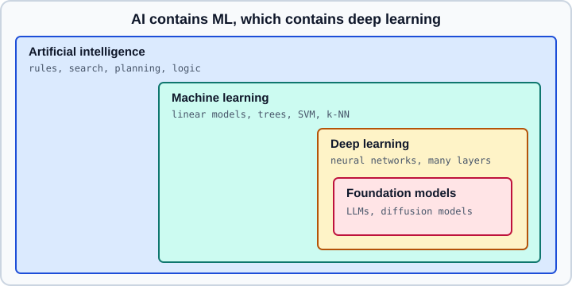

What Is Machine Learning? AI vs ML vs DL
|
This content was generated with the assistance of AI and should be verified against the official documentation before being relied on in production. |
This page was checked on 2026-10-30. It is the first page of the machine learning section and is independent of any framework. The few code examples target Python 3.13 and scikit-learn 1.9, and were run on Python 3.13 with scikit-learn 1.9.1 on 2026-11-01; the deep learning pages that follow use PyTorch 2.15 and TensorFlow 2.21 with Keras 3.15. The vocabulary introduced here (model, parameters, loss, generalization) is used unchanged on every later page. If you arrived from the data science section, What Is Data Science? and Machine Learning Fundamentals cover the same ground at a lighter level and this page links to them instead of repeating their content.
A working definition
Two definitions are quoted in almost every textbook, and both are still the best short answers.
-
Arthur Samuel (1959) described machine learning informally as the field that gives computers the ability to learn without being explicitly programmed. The wording is memorable but vague about what "learn" means.
-
Tom Mitchell (1997) made it testable: a program learns from experience E with respect to a class of tasks T and a performance measure P if its performance on T, as measured by P, improves with experience E.
Mitchell’s version is the one worth keeping, because it forces three questions before any code is written. What is the task (classify an image, forecast demand, choose a move)? What is the measure of success, written as a number? What experience is available (labelled examples, raw logs, interaction with a simulator)? A project in which any of the three is unclear is not ready for a model. The page on problem framing turns those three questions into a checklist.
In practice, supervised machine learning reduces to one idea: instead of writing the function that maps inputs to outputs, collect examples of inputs and outputs and let an optimisation procedure find a function that fits them, then use that function on inputs it has not seen. The last clause is what separates learning from memorising. A table that stores every training example answers training questions perfectly and new questions not at all. Predicting well on new data is called generalization, and it is the subject of its own page.
Programming with rules versus learning from data
Traditional software takes data and rules and produces answers. Machine learning takes data and answers and produces rules, which are then applied to new data to produce new answers.
The two approaches are not rivals. Hand-written rules are the right tool when the logic is known, short and stable (tax brackets, input validation, unit conversion): they are exact, auditable and free of training cost. Learning is the right tool when the rules are too many, too fuzzy or too changeable to write down: recognising a face, ranking search results, detecting fraud whose patterns shift every month. Many production systems combine both, with a model proposing and rules enforcing hard constraints.
The example below makes the difference concrete. A hand-written rule flags a measurement as abnormal using a threshold chosen by a person, and a learned model picks its own decision boundary from labelled examples. Both are scored on data held out from training, which is the only honest way to compare them.
import numpy as np
from sklearn.dummy import DummyClassifier
from sklearn.linear_model import LogisticRegression
from sklearn.metrics import accuracy_score
from sklearn.model_selection import train_test_split
rng = np.random.default_rng(0)
# Two features per example; the label depends on both, with noise.
X = rng.normal(size=(2000, 2))
y = ((1.5 * X[:, 0] - X[:, 1] + rng.normal(scale=0.7, size=2000)) > 0).astype(int)
X_train, X_test, y_train, y_test = train_test_split(
X, y, test_size=0.25, random_state=0, stratify=y
)
# 1. Hand-written rule: someone looked at feature 0 and picked a threshold.
rule_pred = (X_test[:, 0] > 0).astype(int)
# 2. Baseline that ignores the inputs entirely.
baseline = DummyClassifier(strategy="most_frequent").fit(X_train, y_train)
# 3. Learned model: parameters are found by minimising a loss on the training set.
model = LogisticRegression().fit(X_train, y_train)
print("baseline:", accuracy_score(y_test, baseline.predict(X_test)))
print("rule :", accuracy_score(y_test, rule_pred))
print("learned :", accuracy_score(y_test, model.predict(X_test)))
print("learned parameters:", model.coef_, model.intercept_)Output:
baseline: 0.502 rule : 0.804 learned : 0.89 learned parameters: [[ 3.78010463 -2.51506409]] [0.07558739]
Source: scikit-learn: Logistic regression. The learned model recovers weights close to the generating ones (positive for the first feature, negative for the second), which a person staring at the data would find hard to do in more than a few dimensions, and it beats the single-feature rule because it uses both features. The baseline is there to show the floor: any model that cannot beat it has learned nothing. The learned weights have the right signs and roughly the generating ratio of 1.5 to 1; they are larger than 1.5 and 1 because the scale of logistic regression weights is set by the label noise: roughly the generating weights divided by the noise standard deviation (0.7) and multiplied by about 1.7, the usual factor between a logistic and a normal noise curve.
The vocabulary of a learning problem
Every machine learning system, from a linear regression to a language model, is described with the same few words.
| Term | Meaning |
|---|---|
Example (sample, instance) |
One row of data: a customer, an image, a sentence, a time window. |
Features |
The numerical description of an example that the model receives. For tabular data these are columns, for images they are pixel values, for text they are token ids. See feature engineering. |
Label (target) |
The quantity to predict. Absent in unsupervised learning. |
Model |
A parameterised function from features to predictions. Its form (a line, a tree, a stack of layers) is chosen by the practitioner. |
Parameters |
The numbers inside the model that training adjusts: coefficients, tree splits, network weights. A large language model has billions of them. |
Hyperparameters |
Settings chosen before training that the optimiser does not adjust: tree depth, regularisation strength, learning rate, number of layers. They are tuned by comparing validation scores, never by looking at the test set. |
Loss function |
A number that measures how wrong the predictions are on the training data. Training searches for parameters that make it small. The choice of loss is discussed in loss functions and information theory. |
Metric |
A number that measures success in terms of the application (accuracy, recall, mean absolute error). It may differ from the loss, because the loss must be differentiable and the metric need not be. |
Training, validation and test sets |
Three disjoint parts of the data: fit the parameters on the first, choose hyperparameters and models on the second, and report the final estimate on the third, used once. |
Training and inference |
Training fits the parameters and is expensive and done offline. Inference applies the fitted model to new inputs and is what users and services experience. |
The loss and the metric deserve one more sentence. Training minimises the loss, and the loss is a proxy. A classifier trained with cross-entropy is judged on recall at a given precision; a recommender trained on clicks is judged on revenue. A model that lowers the loss without improving the metric is a signal that the proxy is poor, and the model evaluation page covers how to choose and read metrics.
The formal picture is short. Given training pairs \((x_i, y_i)\) and a model \(f_\theta\) with parameters \(\theta\), training solves
\[ \hat\theta = \arg\min_\theta \; \frac{1}{n} \sum_{i=1}^{n} \ell\bigl(f_\theta(x_i),\, y_i\bigr) \]
where \(\ell\) is the per-example loss. Almost everything in the rest of the section is a variation on this line: richer families \(f_\theta\) (the neural network pages), better ways to minimise it (gradient descent), and ways to make the minimiser behave on unseen data (regularization).
AI, machine learning and deep learning
The three terms are nested, not interchangeable.

-
Artificial intelligence is the broad goal of building systems that perform tasks associated with intelligence. It includes methods that involve no learning at all: expert systems built from hand-written rules, logic programming, search and planning algorithms such as A-star, and game-tree search. The chess programs of the 1990s were AI without being machine learning.
-
Machine learning is the subset of AI in which behaviour is derived from data. It covers linear and logistic regression, decision trees and forests, support vector machines, nearest neighbours, boosting, clustering and also neural networks. Much of what companies deploy under the name AI for tabular business data is classic machine learning, and for that kind of data gradient boosting is still a very strong default, as discussed in tabular data: gradient boosting versus deep learning.
-
Deep learning is the subset of machine learning that uses neural networks with many layers to learn useful representations of the raw input instead of relying on hand-built features. Its distinguishing property is representation learning: early layers learn edges or character n-grams, later layers learn objects or phrases, with no person specifying them. It needs more data and compute than classic methods, and in return it dominates images, audio, text and other unstructured data.
-
Foundation models (including large language models) are deep networks pretrained at very large scale with self-supervised objectives and then adapted to many tasks. They are the subject of What Is an LLM? in the AI section and of the transfer learning page here.
Two clarifications avoid common confusion. Generative AI is not a separate branch: image and text generators are deep learning models trained with the same loss-minimisation loop, and the generative models page describes the families. And "data science" is not "machine learning", as the next section explains.
Machine learning, statistics and data science
The three fields share most of their mathematics and differ mainly in the question they ask.
| Statistics | Machine learning | Data science | |
|---|---|---|---|
Main goal |
Inference: estimate effects and quantify uncertainty about how the data was generated |
Prediction: make accurate outputs on new data, often with flexible models |
Decisions: answer a business or research question with data, end to end |
Typical output |
A coefficient with a confidence interval, a test result |
A trained model and its held-out error |
An analysis, a dashboard, a recommendation, sometimes a deployed model |
Judged by |
Validity of assumptions and of the inference |
Generalization error on unseen data |
Whether the answer was right and useful to the people who asked |
The boundary is porous. A logistic regression is a statistical model and a machine learning model at once; what changes is whether you read its coefficients with standard errors or report its test accuracy. Data science is the widest of the three: it covers acquisition, cleaning, exploration and communication, with statistics and machine learning as two of its tools. The Data Science section covers that practice and its workflow; this section goes deeper into the models themselves.
A short timeline
The field’s history explains why older books look the way they do. The dates are the widely documented ones; each marker is a reason to expect different advice in a book from that era.
| Period | What happened |
|---|---|
1950s |
Rosenblatt’s perceptron, the first trainable neural model, and Samuel’s checkers program that improved by self-play. |
1970s to 1980s |
Expert systems dominate AI. Interest in neural networks fades after criticism of single-layer perceptrons, then returns when backpropagation is popularised in the mid-1980s. Periods of reduced funding and expectation are known as AI winters. |
1990s to 2000s |
Support vector machines, boosting and random forests are the state of the art on most benchmarks. Kernel methods and careful feature engineering are the standard approach to vision and speech. |
2012 |
AlexNet, a convolutional network trained on GPUs, wins the ImageNet challenge by a large margin and starts the modern deep learning era. |
2014 to 2016 |
GANs, sequence-to-sequence models with attention, residual networks and deep reinforcement learning (AlphaGo) arrive. |
2017 onward |
The transformer replaces recurrent networks for sequences, and scaling it with self-supervised pretraining leads to today’s large language models and diffusion-based image generators. |
Books written before 2017 teach recurrent networks as the default for text, and books written before 2012 treat neural networks as a niche method. The ideas they present (loss, gradient descent, generalization) are unchanged; the recommended architectures and tools are not. The learning resources page lists which older advice has been superseded.
When machine learning is the right tool
Machine learning has costs that rules do not: data collection and labelling, training and evaluation infrastructure, monitoring, and predictions that are right only on average. It is worth paying when most of the following hold.
-
The rules are hard to write or too numerous, but examples are plentiful.
-
The environment changes and the system must be retrained rather than rewritten.
-
A wrong prediction is tolerable, or a person or fallback can catch it.
-
Predictions create value at the scale where an automated approximation beats a manual process.
-
Data on the target outcome exists, or can be collected, with sufficient quality.
It is a poor choice when a simple rule is correct and stable, when the cost of an individual error is very high with no human check, when there is no data, or when the explanation of each decision is a legal requirement that the available model cannot give. Rule #1 of Google’s Rules of Machine Learning says it directly: do not be afraid to launch a product without machine learning. Ship a simple heuristic first and add a model only when the heuristic’s limits are measured. The problem framing page builds on that advice.
Why it works, and why it can fail
Learning from examples works because real data is not random: it has structure, such as smoothness (nearby inputs have similar outputs), repeated patterns and low-dimensional organisation, that a model with the right inductive bias can exploit. A convolutional network assumes that the same pattern can appear anywhere in an image, a recurrent or attention-based model assumes order matters, a tree assumes that axis-aligned splits are informative. Choosing a model family is choosing which assumptions to make.
The same property explains the main failure modes, which every later page returns to.
-
Overfitting: the model fits noise in the training set and fails on new data. Remedies are more data, a simpler model, regularization and early stopping.
-
Underfitting: the model is too simple, and training error is high too.
-
Data leakage: information from outside the training set (the test labels, the future) reaches the model through a preprocessing step or a feature, and the evaluation looks better than reality. See the common pitfalls page.
-
Distribution shift: the data seen in production differs from the training data, so a model that was good becomes poor without any code changing. See drift and regression monitoring.
-
Spurious correlations and bias: the model learns a shortcut or a social bias that is present in the data. See fairness and responsible ML.
-
Objective mismatch: the loss being minimised is not what the application values.
Where to go next
The section is organised in a deliberate order. The mathematical and optimisation foundations come first (math for ML, gradient descent); then the classic algorithms, whose implementations live in the scikit-learn pages of the data science section; then neural networks starting with the fundamentals, architectures, and finally training at scale, deployment and responsible use. The next page sorts the problems by the kind of feedback the learner receives.